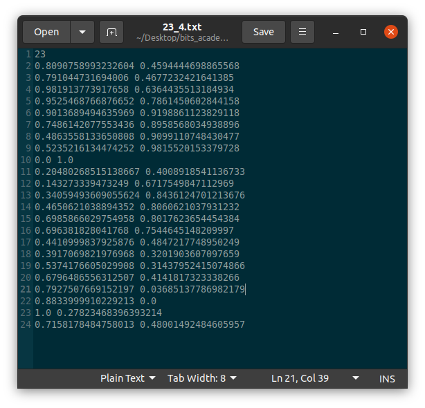
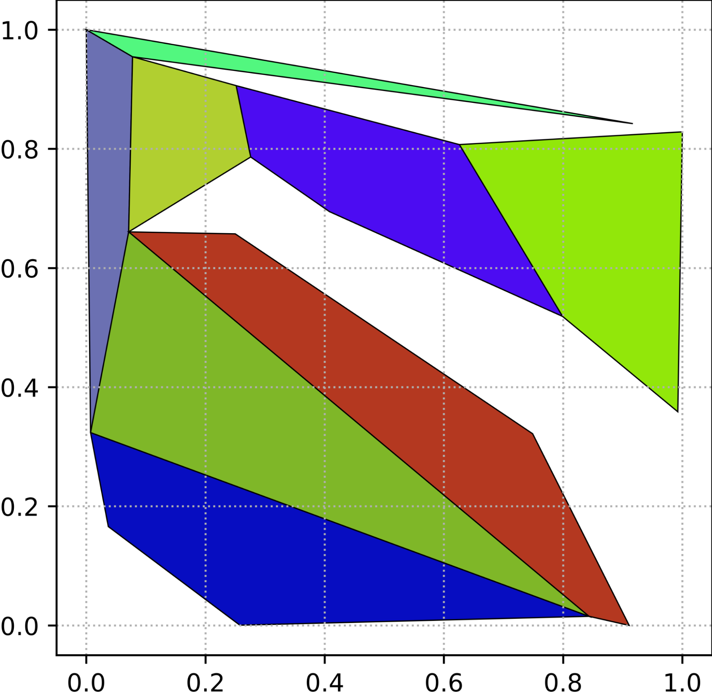
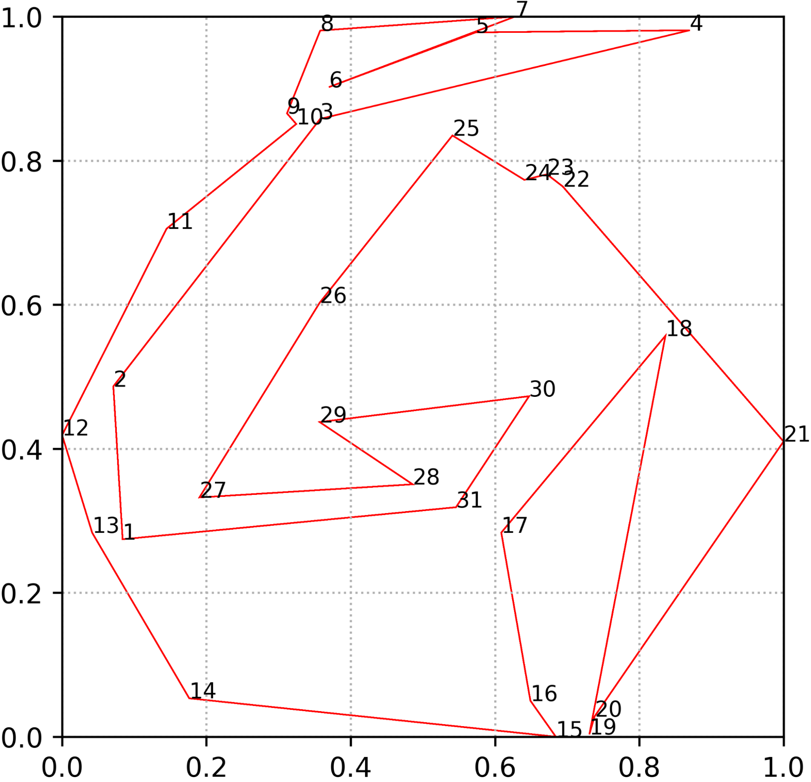
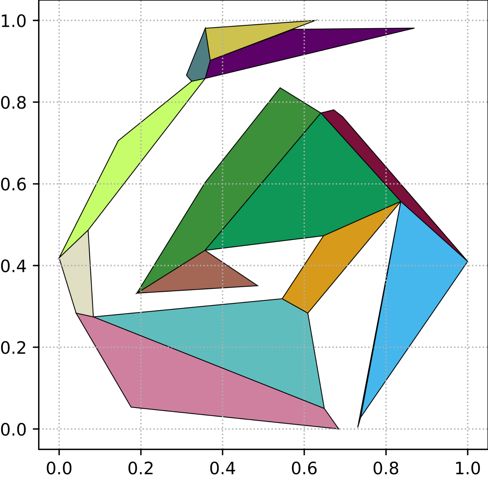
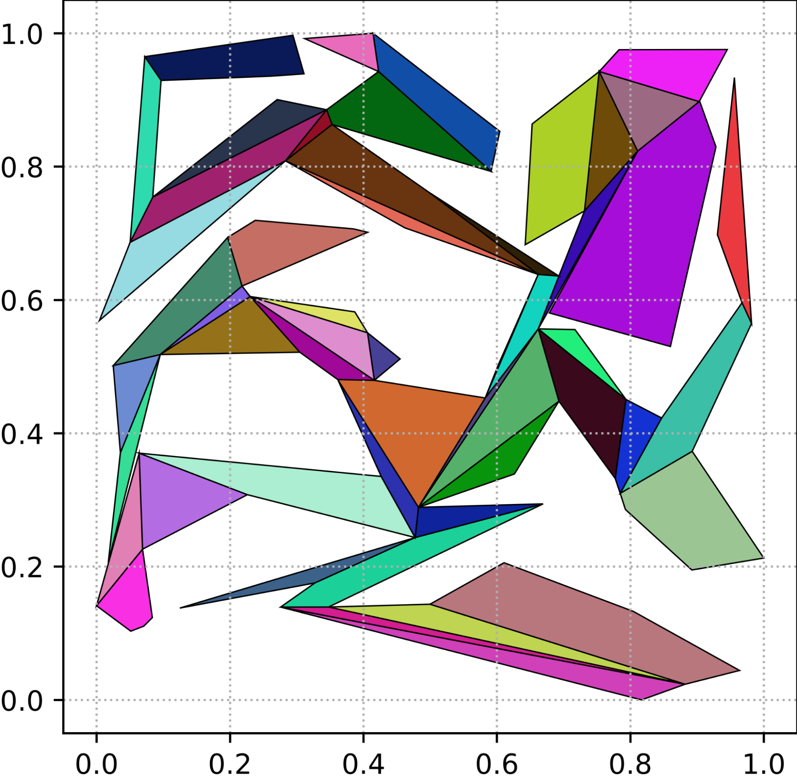
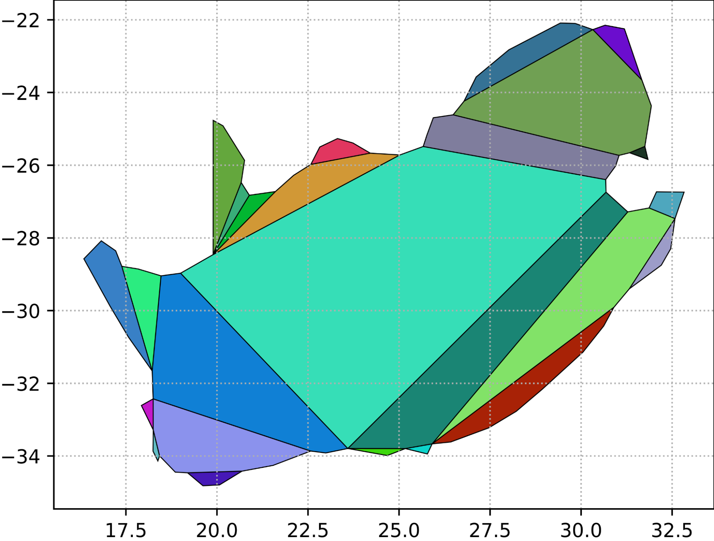

------------------------------------------------------------------------------------------------------------------------------------------------------------------------------------------------------------------------------------------------------------------------------------------
CS F364 Design & Analysis Of Algorithms
------------------------------------------------------------------------------------------------------------------------------------------------------------------------------------------------------------------------------------------------------------------------------------------
Assignment 1 - Polygon decomposition into convex polygons
Prajwal Nayak | 2020A7PS2059H |
Prithvi Rajan | 2020A7PS2080H |
Medini N B | 2020A7PS1722H |
<><><><><><><><><><><><><><><><><><><><><><><><><><><><><><><><><><><><><><><><><><><><><><><><><><><><><><><><><><><><><><><><><><><><><><><><><>
Project Objective
The project objective of polygon decomposition into convex polygons is to take a complex, non-convex polygon and break it down into a set of smaller, convex polygons that can be easier to work with in certain applications. The process involves partitioning the original polygon into a collection of smaller polygons, all of which are convex and non-overlapping and whose union is equal to the original polygon. Convex polygons have many desirable properties that make them useful in computer graphics, geometric modeling, and other related fields. For example, they are easy to triangulate, can be used for collision detection, and have simple geometric properties that make them useful for algorithmic analysis.
Some of the major uses of the same include:
1.Collision Detection: When working with 3D graphics and animations, one common problem is detecting when two or more objects collide. Polygon decomposition can be used to break down the objects into their constituent convex polygons, which can then be checked for intersection with other objects in the scene.
2.Path Planning: In robotics, path planning is the process of finding a path that a robot can take from one location to another without colliding with any obstacles. Polygon decomposition can be used to break down the obstacles into their constituent convex polygons, which can then be used to plan a path that avoids them.
3.Geometric Modeling: Polygon decomposition can be used in geometric modeling to create more complex shapes from simple primitives. For example, a car model can be created by decomposing the body into several convex polygons and adding wheels, windows, and other details.
4.Mesh Simplification: In some cases, a mesh (a collection of polygons) may be too complex to render or manipulate efficiently. Polygon decomposition can be used to simplify the mesh by breaking it down into smaller, more manageable pieces.
Work Roadmap
(Note: either run the source files individually or use “$bash run.sh” to skip the step!)
1.Polygon generation as a dataset:
We created a python script “polygongenerator.py” that uses python libraries: polygenerator, shapely, matplotlib to carry out the generation huge number of x_y.txt files(x = 1, 2, . . ., n: y currently set to 10) that is grouped in specific subfolders: “polygons_input” based on the number of vertices(n) which would later act as input for “DAAFinal.cpp” that carries out the decomposition of the polygon. The script also generates the corresponding polygon images and saves them “images_input” that can act as a reference/comparison later on. The number of vertices can be varied to a large number as per the user’s choice in the script.
Below is the pictorial walkthrough of how the same works:

2.Polygon Decomposition and Merging:
- The data structure that’s been used for storing the polygon and its decomposition is called Doubly Connected Edge List(DCEL). To implement this, we have created the classes, namely HalfEdge, Vertex, Face, and finally, the DCEL class, which contains all of these together.
- Before dwelling into the details of each component and how the same works in the algorithm, it is important to note that our inputs are taken in the counterclockwise direction, and every half-edge moves in a counter-clockwise direction inside a polygon face.
- A half-edge could be understood to be a pointer from one vertex to the next in the particular polygon in context. As we can see in Reference Image 1, ‘e’ is one of the half-edges. This class has components including origin, which is where the Half edge originates from, ‘twin’, which is the other half-edge parallelly opposite to it, and starting from the node to which edge ‘e’ is pointing. It also has a ‘next’ attribute representing the next half-edge on the face counter-clockwise, and a ‘face’ attribute saying which face the half-edge belongs to.
(Reference Image 1)
- Vertex class contains the coordinates of the said vertex. We have also built various helper functions, including ‘side’ and ‘insidePolygon’, which check what side of a particular line the vertex belongs to and if the vertex is inside a given polygon input.
- We have used ‘Face’ to represent each polygon formed on decomposition. Initially, we are given one face in the arbitrary input polygon. We proceed to split these faces into multiple faces depending on the new diagonals added to the DCEL structure. This helps us to keep track of the new polygons formed easily and to split and merge faces as we like.
- The final DCEL structure consists of a list of vertices, half-edges, faces, and diagonals. We added the boolean vector LDP which tells us which polygon face formed is valid after merging. The same shall be explained in-depth ahead.
- We have added two maps, which help us easily relate a face to an index and its corresponding face, which we update whenever a new face is created.
- Split function has been created to split a face into two depending on the diagonal drawn. For this, we have created two new half-edges connecting the two end-points of the diagonal and a new face object. Further, we reconnected the half-edges and their attributes based on the newly created faces.
- For example, as seen in Reference Image 2, say j2-i2 is our diagonal. Now we create two half-edges, one from j2 to i2 and another from i2 to j2. Further we reconnected half-edges such that (i3->i2)’s next is now (i2->j2) and (i2->j2)’s next is (j2->j1). Similarly, for the other face as well.
(Reference Image 2)
- We also reassigned the half-edge’s face to its respective face and the face’s half-edge to one of the correct half-edges. We made it such that we create only one face, and the original face of the polygon is reset to be the first face, while the new face is the newly added face to the DCEL. We store the newly made diagonals in the DCEL’s list used later in merging.
- To detect if a vertex is a notch(the notch is a vertex that creates an angle > 180o with respect to nodes before and after it), we used the formula of signed area. This calculates the triangle's area with three nodes while also including the sign of the area. If the said area is >= 0, then we return true, else false.
- We have used an intersection function to see the x value of the intersection of the two lines v1 v2 and the line parallel to the x-axis through the current vertex.
- We have a ‘side’ function, which checks if the current vertex is on the same side as any other vertex, given a line. We use this to evaluate if the point is on the same semi-plane as the given vertex by using basic coordinate geometry.
- To check if the point is inside a polygon, we use an algorithm, the ray-casting algorithm. The algorithm works by casting a ray in the positive x direction, parallel to the x-axis. We check the number of vertices that this ray is incident to. If it is an odd number, we say the vertex is inside the polygon, else it is not. We have again used simple coordinate geometry formulae to check if the ray intersects the edge or not.
- To check if a vertex lies inside a rectangle, we have checked if the point lies within the ranges on the x-axis and on the y-axis, which are the rectangle coordinates.
- The way this algorithm works is we start with any particular vertex. From here, we greedily add vertices into a list called L[m] until we find a vertex we cannot add. The list L[m] essentially contains the potential new polygon that we can form. We decide if a vertex cannot be added by checking if it creates an angle >180 with respect to its previous two vertices, its previous and the starting vertex, and also the starting and 2nd vertex. To check the angles, we used the signed area function.
- We then proceed to iterate through every vertex in the polygon that does not belong to the list L[m]. We call this LPVS. We then check if any point in LPVS is inside the smallest rectangle that contains L[m]. To build this rectangle, we found the minimum and maximum x, and y coordinates of the points in L[m], and to check if any point is inside, we used the above mentioned function.
- If we find any point inside the rectangle, we check if this point is inside the polygon formed by L[m]. This is done easily, as mentioned in the ray-casting algorithm above. If said point, call it V, is inside the polygon, we then draw a line from the starting vertex of L[m], say v0, and this point V. We create a list VTR which contains all the points in L[m] on the same side of v0-V as the last vertex in L[m], done using the ‘side’ function. Finally, we rid L[m] of all points in VTR and repeat this for the remaining points in LPVS until LPVS is empty or L[m] has only two points.
- Finally, we build a polygon using the points in L[m]; we use the split function as mentioned above. If said polygon has only two points or less, we skip to the next iteration, where the starting point is the last element in this iteration of L[m]. After we run out of points in L[m], the algorithm is complete with a fully decomposed polygon.
- Merging: ridding the polygon created from Algorithm 1 of any redundant diagonals
- Here, we iterate through every diagonal in the polygon. We check if this diagonal is redundant by checking if the angle formed without it on both ends of the diagonal is convex. If both of them are convex angles, we merge the faces.
- To do this, we build a new face, and re-assign the face for all half edges in both faces to this new face, and the half edge of this face to any half edge in one of the faces. We also reconnect the half edges that used to have the diagonal as next or previous in a similar way to what we did in splitting. We also mark the old faces as false and the new face as true in LDP, saying that the old faces are no longer necessary.
- Finally, we output the polygons generated onto a text file, where we iterate through the faces in the final DCEL, which have LDP for that face as true. We print the vertices of each of those faces for the python plotter to read and plot the final decomposition after merging.
3.Output Rendering:
The “DAAFinal.cpp” generated output text files named n_i.txt(with i = 1, 2, . . ., 10) and dumps them in their respective folders “n” sub-folders inside the “decomposed” folder. We use “decomppolygen.py” to render the images of the decomposed polygons. Each sub-polygon that’s part of the main polygon is colored with a unique color to distinguish the same. The number of subfolders “n” to decompose needs to be set as per how many images we want to be rendered. Please note that rendering the same is time-consuming as the number of vertices increases.
Below is the pictorial representation of various test cases that were run:
Number of Vertices(n) | Initial Input Polygon | After Decomposition, Before Merging | After Merging(Final Convex polygon) |
5 | 
|
|
|
9 |
|
|
|
18 |
|  |
|
31 |  |
|  |
50 | 
|
|
|
62 | 
|
|
|
75 |
|
|
|
88 |
|  |
|
104 |
| 
|
|
118 |
|
|
|
134 |
|
|
|
143 |
|
|
|
It is also to be noted how slightly or noticeably the pattern on final convex polygon changes subjected to different starting points.
Polygon 1 |
|
|
|
|
Polygon 2 |
|
|
|
|
Polygon 3 |
|  |
|
|
Polygon 4 |
| 
|

|
|
Polygon 5 |
|
|
|
|
We also ran our “data.cpp” for over a number of vertices(n) varying from 4 to over 950 and plotted the time variation with respect to n below using “timeplot.py”. That’s evaluating nearly over ~9500 polygons, which took the generation of input.txt to itself span over hours, regardless, our “DAAFinal.cpp” takes mere milliseconds to solve it.
References:
[1] Fernández, J., Cánovas, L., & Pelegrın, B. (2000). Algorithms for the decomposition of a polygon into ́ convex polygons. European Journal of Operational Research, 121(2), 330-342. https://doi.org/10.1016/S0377-2217(99)00033-8
[2] https://en.wikipedia.org/wiki/Ray_casting
[3] Python libraries documentation